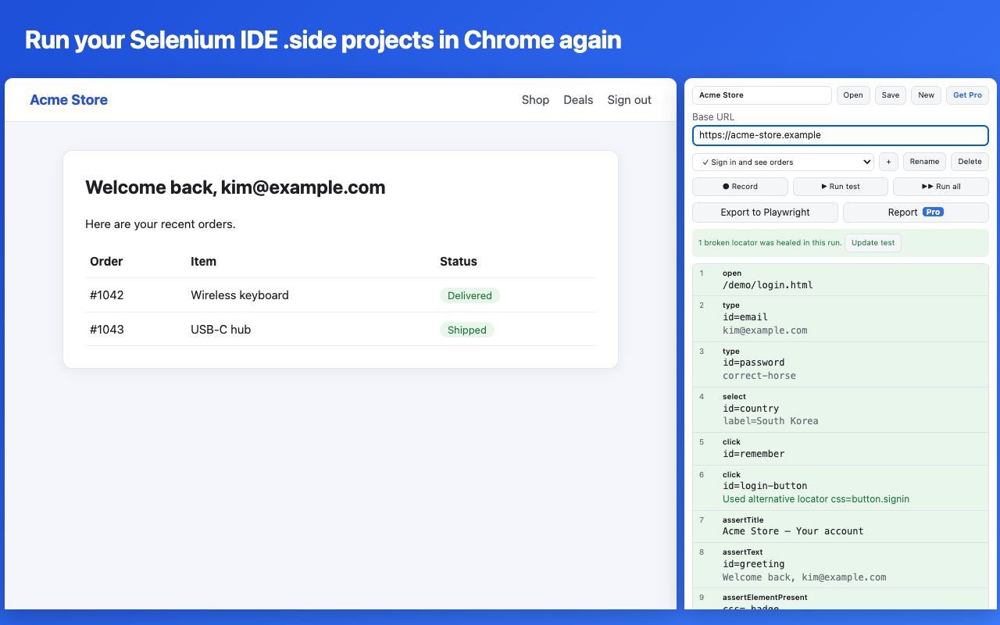

Selenium IDE Chrome extension alternatives (2026)
.side tests still work, though: you don't have to rewrite them. SideReplay is a Chrome extension that opens them as they are and runs them in the side panel.Add SideReplay to Chrome, free
No sign-up. Recording and playback are free. Your tests stay in your browser.
Is the Selenium IDE Chrome extension still available?
No. If you search the Chrome Web Store for Selenium IDE today, you won't find it, and computers that still had it show it as turned off. Here is what happened:
- The Selenium IDE Chrome extension was built on Manifest V2, Chrome's older extension platform. It had not been updated since late 2021.
- Chrome turned off Manifest V2 extensions in July 2025 (Chrome 138), so the extension stopped running.
- On August 31, 2026 the Chrome Web Store removed the remaining Manifest V2 listings, so it can't be installed on a new computer either.
- Selenium IDE 4 is a separate desktop app rather than a browser extension. Its last release was a beta in July 2024, and Selenium contributors have said on the selenium-users list that neither the extension nor the app is maintained any more.
The good news: a .side file is plain JSON. The tests you recorded over the years are not lost; you only need something that can run them.
More detail on the error messages people see: what happened to the Selenium IDE Chrome extension.
Your options, compared
| Option | Opens .side files | Records new tests | Where it runs | Turns tests into code | Cost |
|---|---|---|---|---|---|
| Selenium IDE 4 (desktop beta, last release July 2024) | Yes | Yes | Its own desktop app | Selenium WebDriver languages | Free |
| Selenium IDE for Firefox | Yes | Yes | Firefox only | Selenium WebDriver languages | Free |
| selenium-side-runner | Yes | No | Command line, with WebDriver | — | Free |
| UI.Vision RPA | Imports them into its own format | Yes | Chrome and Firefox extension | No Playwright export | Free, PRO from $299/year |
| Chrome DevTools Recorder | No | Yes | Built into Chrome | Puppeteer, JSON (more through Recorder extensions) | Free |
| SideReplay | Yes, as they are | Yes | Chrome side panel | Playwright Test | Free, Pro $9/month |
Which one fits you
- You want to stay with the Selenium project's own tools and don't mind that they are no longer updated: try Selenium IDE 4, or the Firefox add-on.
- You only need to run existing tests in CI: selenium-side-runner runs
.sidefiles from the command line. - You also automate desktop apps or need OCR: UI.Vision RPA is a broad RPA tool that can import Selenium IDE projects.
- You are recording brand-new flows and don't care about .side: Chrome's built-in DevTools Recorder is free and already installed.
- You want to keep editing and running your .side tests in Chrome, and move them to Playwright when you are ready: that is exactly what SideReplay was built for.
- You used Katalon Recorder: it is no longer maintained either. SideReplay opens the HTML test suites it saved. See the Katalon Recorder alternative guide.
Add SideReplay to Chrome
Keep running your .side tests with SideReplay
- Install SideReplay from the Chrome Web Store.
- Click the toolbar icon to open the side panel, then Open your
.sidefile. Files from Selenium IDE 3.x and 4.x open as they are. - Click Run test. All 93 Selenium IDE commands are supported, including control flow, alerts, iframes and new windows. If a step can't run, SideReplay tells you before the test starts.
- If the page changed since you recorded, broken locators are healed from the other locators saved in the file, and one click updates the test.
- When you want to move to code, export to Playwright, or try the free online converter first.

Before you install
Chrome says it can "read and change all your data on all websites". Why?
That is how Chrome describes any extension that can click and type on the pages you test, and Selenium IDE showed the same warning. SideReplay only clicks, types or records on a page after you start a test or a recording. It has no servers of its own, and your tests and page content are never sent anywhere. See the privacy policy.
Will I be locked in?
No. SideReplay saves projects in the same .side format and keeps any fields it doesn't use, so the files still open in Selenium IDE and selenium-side-runner.
Is it the official Selenium IDE?
No. It is an independent extension that reads the same file format. It is listed as a Selenium IDE alternative on AlternativeTo.
What does it cost?
Opening, running, editing, recording and fixing broken locators are free, with no time limit. Pro ($9/month) adds exporting whole projects to Playwright, HTML reports and data-driven runs over every CSV row. If Pro isn't for you, email us within 14 days for a full refund.
Add SideReplay to Chrome, free
Takes a few seconds. Remove it any time from Chrome's extensions menu.
Details about other tools were checked in October 2026 and may change. If something here is out of date, let us know.